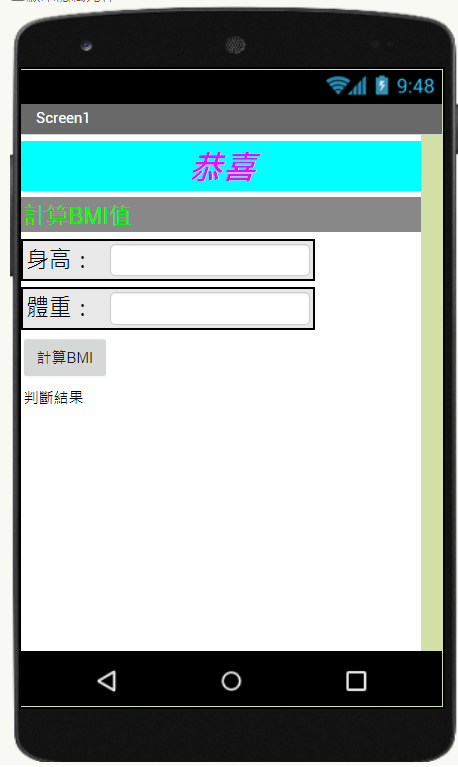
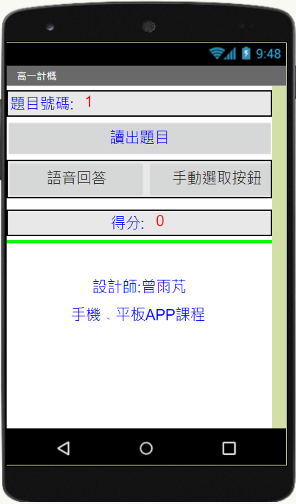
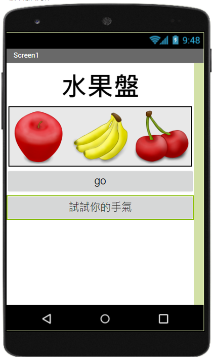

-作品集-
-就愛劉在石-
這是在高中時迷上了韓國綜藝跑男，老師說要為做自己的偶像做出網頁，但是我
不追星思考了很久，就想到用韓國綜藝中的國民主持人來作主題，其實操做起來
並不難，只要寫好程式在抓網路上的連結就可以做出網頁了，整體製作方法不難
，而且它可以直接下載到手機變成軟體，在高中我的手機裡幾乎都是我自己做的
軟體，每次看到的時候會很有成就感。(AI2需要登入帳號才可以看見，所以一般
是看不到程式下面附上首頁照片)

-計算BMI計算BMI-
幾乎每學一個程式設計都會教BMI設計，向VB、VS、C++、NET、AI2都有教BMI
計算(AI2需要登入帳號才可以看見，所以一般是看不到程式，)

-語音助理-
當時語音助理流行，老師要求我們製作出一款語音助理，最終我們語音助理的聲音
是採用谷歌語音助理的聲音，利用轉換的方式，是先出好題目，搭配語音助理的聲
音讓他唸出我們事先設定好的題目(AI2需要登入帳號才可以看見，所以一般是看不
到程式下面附上首頁照片)

-水果轉盤-
水果盤就是一種賭博，它不考驗運氣，因為它的機率是設定好的，所以妳只要轉到
固定的次數，就會出像三個一樣的水果圖案，所以我們把機率改為隨機，然後要自
幾選定時間按停，可能會嘗試很多次都沒有遇到相同的圖案，因為我嘗試過了，從
上課玩到下課，沒有一次成功。(AI2需要登入帳號才可以看見，所以一般是看不到
程式下面附上首頁照片)
